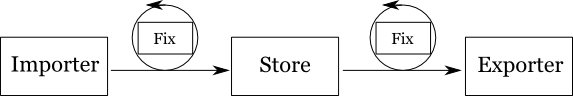

Where do we use it?
In the LibreCat project it is our goal to provide in open source a set of programming components to build up digital libraries services suited to your local needs. Here is an example of the projects we are working on:
We have more than 40 Catmandu projects available at GitHub LibreCat.
Why do we use it?

Extract, Transform and Load
Create a search engine, one of your first tasks will to import data from various sources, map the fields to a common data model and post it to a full-text search engine. Perl modules such as WebService::Solr or ElasticSearch provide easy access to your favorite document stores, but you keep writing a lot of boilerplate code to create the connections, massaging the incoming data into the correct format, validating and uploading and indexing the data in the database. Next morning you are asked to provide a fast dump of records into an Excel worksheet. After some fixes are applied you are asked to upload it into your database. Again you hit Emacs or Vi and provide an ad-hoc script. In our LibreCat group we saw this workflow over and over. We tried to abstract this problem to a set of Perl tools which can work with library data such as MARC, Dublin Core, EndNote protocols such as OAI-PMH, SRU and repositories such as DSpace and Fedora. In data warehouses these processes are called ETL, Extract, Transform, Load. Many tools currenty exist for ETL processing but none adress typical library data models and services.
Copy and Paste
As programmers, we would like to reuse our code and algorithms as easy as possible. In fast application development you typically want to copy and paste parts of existing code in a new project. In Catmandu we use a functional style of programming to keep our code tight and clean and suitable for copy and pasting. When working with library data models we use native Perl hashes and arrays to pass data around. In this way adhere to the rationale of Alan J. Perlis: "It is better to have 100 functions operate on one data structure than to have 10 functions operate on 10 data structures." Our functions are all based on a few primary data structures on which we define many functions (map, count, each, first, take, ...)
Schemaless databases
Working with native Perl hashes and arrays we would like to use an easy mechanism to store and index this data in a database of choice. In the past it was a nuisance to create database schemas and indexes to store and search your data. Certainly in institutional repositories this can be a ongoing job for a programmer because the metadata schemas are not fixed in time. Any new report will require you to add new data fields and new relations for which you need to change your database schema. With the introduction of schemaless databases the storage of complex records is really easy. Create a Perl hash excute the function 'add' and your record is stored into the database. Execute 'get' to load a Perl hash from the database in memory. With our ElasticSearch plugin we even can provide you a CQL style query language for retrieval.
my $obj = { name => { last => 'Bond' , full => 'James Bond' } , occupation => 'Secret Agent' };
$store->bag->add($obj);
$store->bag->search(cql_query => 'name.last = Bond')->each(sub {
my $obj = shift;
printf "%s\n" , $obj->{name}->{full};
});
Getting Started
To get Catmandu running on your system you need to download and install the CPAN Catmandu module.
As Catmandu has numerous dependencies, we recommend installing them fully automatically, which can be done as follows.
$ sudo cpan
o conf prerequisites_policy follow
o conf build_requires_install_policy yes
o conf commit
install Task::Catmandu
q
Importer
Importers are Catmandu packages to read data into an application. We provide importers for MARC, JSON, YAML, CSV, Excel but also Atom and OAI-PMH endpoints.
As an example, lets create a Perl script to read a YAML file containing an array of values. We use the each function to loop through all the items
#!/usr/bin/env perl
use Catmandu::Importer::YAML;
my $importer = Catmandu::Importer::YAML->new(file => "./test.yaml");
my $count = $importer->each(sub {
my $obj = shift;
# .. your code ..
});
print "Read: $count YAML items\n";
Running this script using this test.yaml file you should see as output:
Read: 3 YAML items
Here is an example script to read 10 records from an OAI-PMH endpoint into an application:
#!/usr/bin/env perl
use Catmandu::Importer::OAI;
my $importer = Catmandu::Importer::OAI->new(url => 'http://biblio.ugent.be/oai');
my $count = $importer->take(10)->each(sub {
my $obj = shift;
# .. your code ..
});
print "Read sample of $count OAI items\n";
Iterable
The Iterable package provides many list methods to process large streams of records. Most of the methods are lazy if the underlying datastream supports it. While all of the data in Catmandu are native Perl hashes and arrays it can be impratical to load a result set of thousands of records into memory. Most Catmandu packages such as Importer, Exporter, Store provide therefor an Iterable implementation.
Using a 'Mock' importer we can generate some Perl hashes on-the-fly and show the functionality provided by Iterable:
use Catmandu::Importer::Mock;
my $it = Catmandu::Importer::Mock->new(size => 10);
With each you can loop over all the items in an iterator:
$it->each(sub {
printf "My n is %d\n" , shift->{n};
});
Using any, many, all you can test for the existence of items in an Iterator:
my $answer = $it->any(sub { shift->{n} > 4});
printf "Iterator contains n > 4 = %s\n" , $answer ? 'TRUE' : 'FALSE';
my $answer = $it->many(sub { shift->{n} > 8});
printf "Iterator contains n > 8 = %s\n" , $answer ? 'TRUE' : 'FALSE';
my $answer = $it->all(sub { shift->{n} =~ /^\d+$/});
printf "Iterator contains only digits = %s\n" , $answer ? 'TRUE' : 'FALSE';
Map and reduce are functions that evaluate a function on all the items in an iterator to procude a new iterator or a summary of the results:
# $it contains: [ { n => 1 } , { n => 2 } , ... ];
my $ret = $it->map(sub {
my $hash = shift;
{ n => $hash->{n} * 2 }
});
# $ret contains : [ { n => 2 } , { n => 4 } , ... ];
my $result = $it->reduce(0,sub {
my $prev = shift;
my $this = shift->{n} * 2;
$prev + $this;
});
printf "SUM [ Iterator * 2] = %d\n" , $result;
The Iterable package provides many more functions such as: to_array, count, each, first, slice, take, group, tap, detect, select, reject, any, many, all, map, reduce and invoke.
Exporter
Exporters are Catmandu packages to export data from an application. As input they can get native Perl hashes or arrays but also Iterators to stream huge data sets.
Here is an example using our Mock importer to stream 1 million Perl hashes through an Exporter:
use Catmandu::Exporter::YAML;
my $exporter = Catmandu::Exporter::YAML->new();
$exporter->add_many(Catmandu::Importer::Mock->new(size => 1000000));
Catmandu provides exporters for BibTeX, CSV, JSON, RIS, XLS and YAML. If you need a special exporter for your own format you could use the Template exporter which uses Template Toolkit.
As an example lets create an exporter for an Perl array of hashes $data using a template:
use Catmandu::Exporter::Template;
my $data = [
{ name => { first => 'James' , last => 'Bond' } , occupation => 'Secret Agent' } ,
{ name => { first => 'Ernst' , last => 'Blofeld' } , occupation => 'Supervillain' } ,
];
my $exporter = Catmandu::Exporter::Template->new(template => '/home/phochste/example.tt');
$exporter->add_many($data);
The template
example.tt will be rendered for every hash in the array
$data (or for every item in an Iterable
$data).
<character>
<name>[% name.last %], [% name.first %]</name>
<occupation>[% occupation %]</occupation>
</character>
Fix
Fixed can be used for easy data manipulation by non programmers. Using a small Perl DSL language librarians can use Fix routines to manipulate data objects. A plain text file of fixes can be created to specify all the data manipulations that need to be executed to 'massage' the data in the desired format.
As an example we will import data from a MARC file and change some metadata fields using Fix routines. Here is the code to run the example:
use Catmandu::Fix;
use Catmandu::Importer::MARC;
use Data::Dumper;
my $fixer = Catmandu::Fix->new(fixes => ['marc.fix']);
my $it = Catmandu::Importer::MARC->new(file => 'marc.txt', type => 'ALEPHSEQ');
$fixer->fix($it)->each(sub {
my $obj = shift;
print Dumper($obj);
});
The output of this script should generate something like this:
$VAR1 = {
'_id' => '000000043',
'my' => {
'authors' => [
'Patrick Hochstenbachhttp://ok',
'Patrick Hochstenbach2My bMy eMy codeGhent1971',
'Patrick Hochstenbach3',
'Stichting Ons Erfdeel'
],
'language' => 'dut',
'subjects' => [
'MyTopic1',
'MyTopic2',
'MyTopic3',
'MyTopic4'
],
'stringy' => 'MyTopic1; MyGenre1; MyTopic2; MyGenre2; MyTopic3; MyTopic4; MyGenre4'
}
};
We need two files as input: marc.txt is a file containing MARC records and marc.fix contains the fixes that need to be applied to each MARC record. Lets take a look at the contents of this marc.fix file:
marc_map('100','my.authors.$append');
marc_map('710','my.authors.$append');
marc_map('600x','my.subjects.$append');
marc_map('008_/35-37','my.language');
marc_map('600','my.stringy', -join => "; ");
marc_map('199','my.condition', -value => 'ok');
remove_field('record');
The fixes in this file are specialized in MARC processing. In line 1 we map the contents of the MARC-100 field into a deeply neested Perl hash with key 'authors'. In line 3 we map the contents of the MARC-600 x-subfield into the 'subjects' field. In Line 4 we read characters 35 to 37 from the MARC-008 control field into the 'language' key.
A Catmandu Fix provides also many functions to manipulate Perl hashes. The remove_field, as shown above in the fix file, will remove a key from a Perl hash. Other fix function are: add_field, capitalize, clone, collapse, copy_field, downcase, expand, join_field, move_fild, remove_field, replace_all, retain_field, set_field, split_field, substring, trim and upcase.
Store
As explained in the introduction, one of the rationales for creating Catmandu is to ease the serialization of records in our database of choice.
The introduction of schemaless databases made the storage of complex records quite easy. Before we delve into this type of database
we need to show you what syntax Catmandu is using to store data.
As example lets create the most simple storage mechanism possible, an in memory hash. We use this mock 'database' to show some
of the features that any Catmandu::Store has. First we will create a YAML importer as shown above to import records into
an in memory hash store:
use Catmandu::Importer::YAML;
use Catmandu::Store::Hash;
use Data::Dumper;
my $importer = Catmandu::Importer::YAML->new(file => "./test.yaml");
my $store = Catmandu::Store::Hash->new();
# Store an iterable
$store->bag->add_many($importer);
# Store an array of hashes
$store->bag->add_many([ { name => 'John' } , { name => 'Peter' }]);
# Store one hash
$store->bag->add( { name => 'Patrick' });
# Commit all changes
$store->bag->commit;
Each Catmandu::Store have one or more compartments (e.g. tables) to store data called 'bag'. We use the function 'add_many' to store
each item in the importer Iterable into the Store. We can also store an array of Perl hashes with the same command. Or store a
single hash with the 'add' method.
Each bag is an Iterator so you can apply any of the 'each','any','all',... methods shown above to read data from a bag.
$store->bag->take(3)->each(sub {
my $obj = shift;
#.. your code
});
When you store a perl Hash into a Catmandu::Store then an identifier field '_id' gets added to your perl Hash that can be used to
retrieve the item at a later stage. Lets take a look at the identifier and how it can be used.
# First store a perl hash and return the stored item which includes the stored identifier
my $item = $store->bag->add( { name => 'Patrick' });
# This will show you an UUID like '414003DC-9AD0-11E1-A3AD-D6BEE5345D14'...
print $item->{_id} , "\n";
# Now you can use this identifier to retrieve the object from the store
my $item2 = $store->bag->get('414003DC-9AD0-11E1-A3AD-D6BEE5345D14');
And that is how it works. Catmandu::Store has some more functionality to delete items and query the store (if the backend
supports it), but this is how you can store very complex Perl structures in memory or on disk with just a few lines of
code. As a complete example we can show how easy it is to store data in a fulltext search engine like ElasticSearch.
In this example we will download ElasticSearch version 0.19.3 from this website
and install it on our system:
$ wget https://github.com/downloads/elasticsearch/elasticsearch/elasticsearch-0.19.3.tar.gz
$ tar zxvf elasticsearch-0.19.3.tar.gz
$ cd elasticsearch-0.19.3
$ bin/elasticsearch
After running the last command 'bin/elasticsearch' we have started the search daemon. Now we can index some data with
Catmandu:
use Catmandu::Importer::YAML;
use Catmandu::Store::ElasticSearch;
my $importer = Catmandu::Importer::YAML->new(file => './test.yaml');
my $store = Catmandu::Store::ElasticSearch->new(index_name => 'demo');
$store->bag->add_many($importer);
$store->bag->commit;
All records in the file 'test.yaml' should be available now index. We can test this by executing a new script to
read all records stored in the store:
use Catmandu::Store::ElasticSearch;
use Data::Dumper;
my $store = Catmandu::Store::ElasticSearch->new(index_name => 'demo');
$store->bag->each(sub {
my $obj = shift;
print Dumper($obj);
});
If everything work correct you should something like this:
$VAR1 = {
'first' => 'Charly',
'_id' => '96CA6692-9AD2-11E1-8800-92A3DA44A36C',
'last' => 'Parker',
'job' => 'Artist'
};
$VAR1 = {
'first' => 'Joseph',
'_id' => '96CA87F8-9AD2-11E1-B760-84F8F47D3A65',
'last' => 'Ratzinger',
'job' => 'Pope'
};
$VAR1 = {
'first' => 'Albert',
'_id' => '96CA83AC-9AD2-11E1-B1CD-CC6B8E6A771E',
'last' => 'Einstein',
'job' => 'Physicist'
};
The ElasticSearch store even provides an implementation of the Lucene and CQL query language:
my $hits = $store->bag->searcher(query => 'first:Albert');
$hits->each(sub {
my $obj = shift;
printf "%s %s\n" , $obj->{first} , $obj->{last};
});
This last example will print 'Albert Einstein' as result. Clinton Gormley did some great work in providing
a Perl client for ElasticSearch. Searching complex objects can be done by using a dot syntax e.g. 'record.titles.0.subtitle:"My Funny Valentine"'.
The beauty of ElasticSearch is that it is completely plainless to setup and requires no schema: indexing
data is simply done by using JSON over HTTP. All your fields are indexed automatically.
Lazy
Most of the Catmandu processing doesn't require you to write any Perl code. With command line tools you can store data files into databases, index your data, export data in various formats and provide basis data cleanup operations.
Say, you have a YAML file 'test.yml' like:
---
first: Charly
last: Parker
job: Artist
---
first: Albert
last: Einstein
job: Physicist
---
first: Joseph
last: Ratzinger
job: Pope
...
and you are required to transform it into JSON. Using the 'catmandu' command you can do this with these options:
$ catmandu data --from-importer YAML --into-exporter JSON < test.yml
Basically you connect a YAML importer to a JSON exporter.
Need some fancy export? Then use the Template exporter which uses a template file like 'test.xml.tt' below to render the output.
<foo>
<first>[% first %]</first>
<last>[% last %]</last>
<job>[% job %]</job>
</foo>
To run the 'catmandu' command you need to provide 'Template' as the exporter to write into and a full path to the template file (without the .tt extension). Note that optional arguments for Importers and Exporters can be provided with the '--from-[NAME]' , '--into-[NAME]' syntax:
$ catmandy data --from-importer YAML --into-exporter Template --into-template `pwd`/test.xml < test.yml
Which produces the output:
<foo>
<first>Charly</first>
<last>Parker</last>
<job>Artist</job>
</foo>
<foo>
<first>Albert</first>
<last>Einstein</last>
<job>Physicist</job>
</foo>
<foo>
<first>Joseph</first>
<last>Ratzinger</last>
<job>Pope</job>
</foo>
Using this command line tools indexing data becomes also very easy. Boot up the ElasticSearch and run the command below to index the test.yml file:
$ catmandu data -v --into-store ElasticSearch --into-index_name demo --into-bag data --from-importer YAML < test.yml
To show the results from your hard word we can export all the records from the ElasticSearch store:
$ catmandu data --from-store ElasticSearch --from-bag data --from-index_name demo
{"first":"Albert","_id":"3A07B0F8-0973-11E2-98F8-F84380C42756","last":"Einstein","job":"Physicist"}
{"first":"Charly","_id":"3A0792D0-0973-11E2-8724-A22A2812F5B2","last":"Parker","job":"Artist"}
{"first":"Joseph","_id":"3A07B5EE-0973-11E2-97BF-E053E6A92BE5","last":"Ratzinger","job":"Pope"}
We can even be more lazy by creating a catmandu.yml file containing the connection parameters to the ElasticSearch:
---
store:
default:
package: ElasticSearch
options:
index_name: demo
Using the configuration file above indexation of YAML data can be done like this:
$ catmandu data -v --into-bag data --from-importer YAML < ~/Desktop/test.yaml
And exporting all data can be done like this:
$ catmandu data --from-bag data
For Catmandu stores that support a query language, exporting data can be very powerfull using the '--query' option. E.g. we can export all records about 'Einstein' from our ElasticSearch store using:
$ catmandu data --from-bag data --query "Einstein"